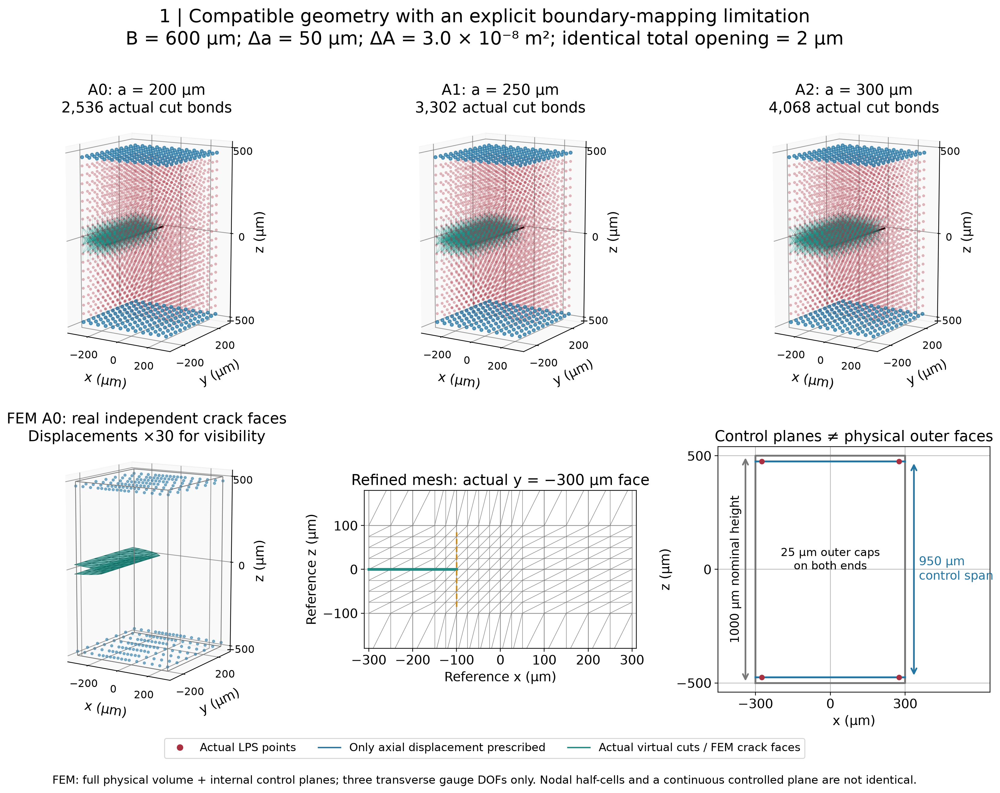
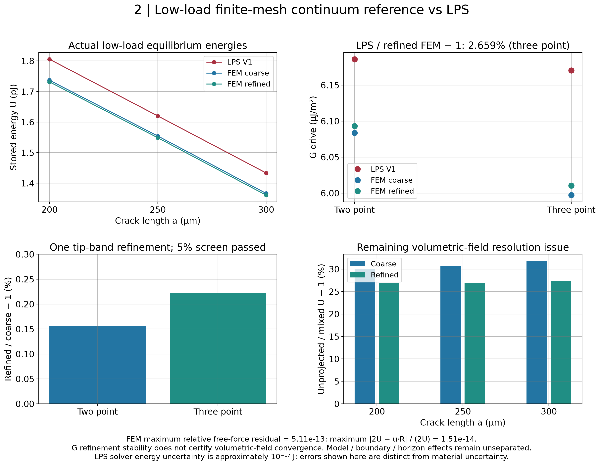
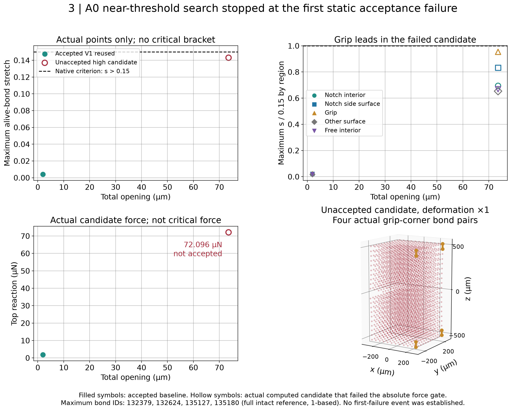
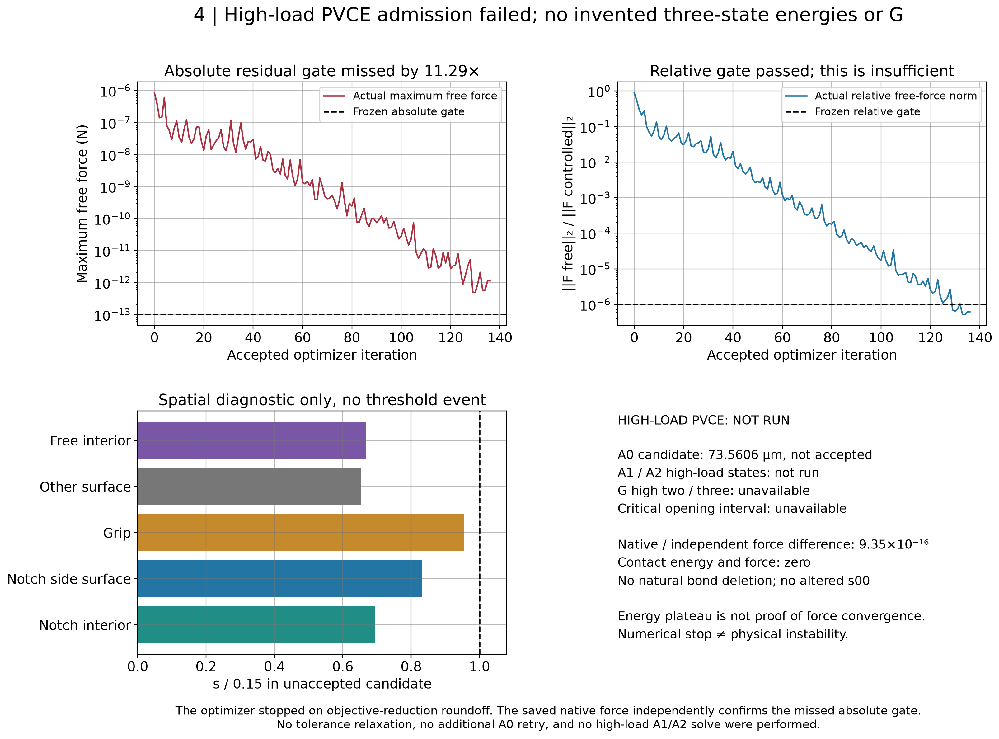

六个连续体状态完成；三点 G 加密变化0.22%，但体积应变场仍未认证收敛。A0 高载候选未通过绝对残余力门槛，真实临界区间未建立，高载 A1/A2 未运行；材料 Gc 未识别。

SVG · Fig1_geometry_and_boundary_mapping

SVG · Fig2_low_load_continuum_comparison

SVG · Fig3_A0_actual_search_and_location

SVG · Fig4_near_onset_admission_failure